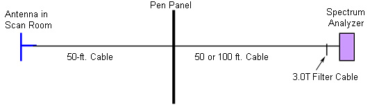

Illustration 4: Connections from Analyzer

| NOTE: | The kit contains three 50-foot BNC cables. One will be used in the Scan Room, and one will be used in the Equipment Room. The third 50-foot cable can be connected in series either in the Scan or Equipment Room if necessary; however, it is recommended that the minimum cable length be used. |